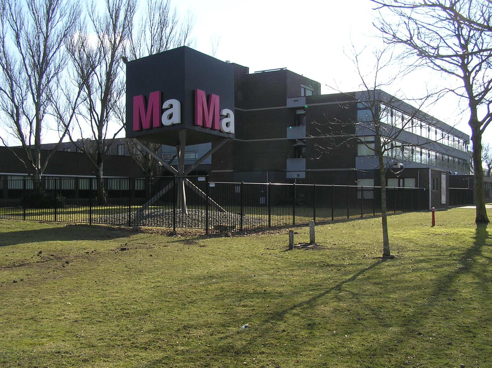
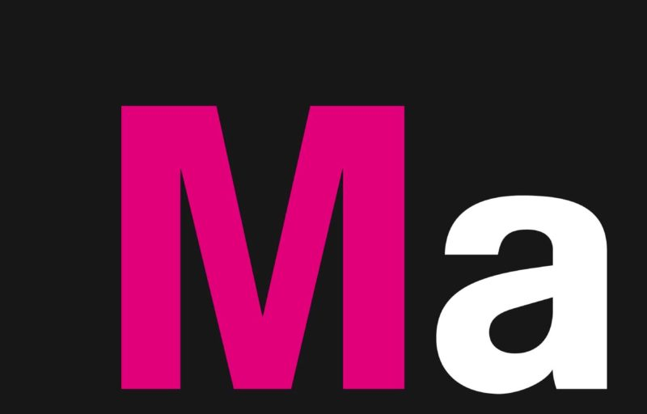
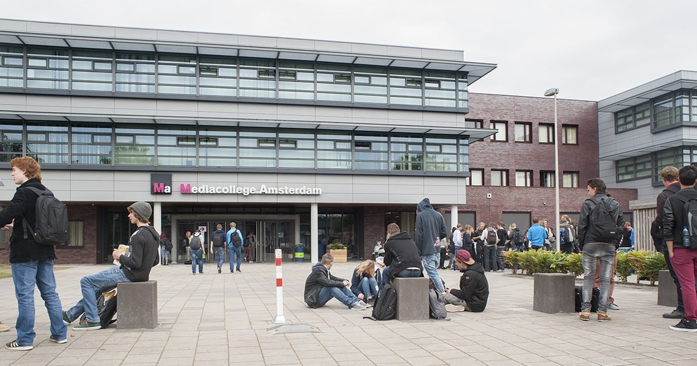

Welkom op mijn landingspage. Mijn naam is Kamil Agdere en met dit landingspage ga ik je alles
vertellen wat je kan verwachten van het Mediacollege Amsterdam en van welke opleiding ik doe. Daar gaan
we het over hebben bij het gedeelte: Info Opleiding.


InfoMA
Ma is een vakschool vooral de media.
Je hebt de keus uit 14 praktijkgerichte opleidingen waarmee je straks aan de slag kunt in de entertainmentwereld,
de game-industrie, een ontwerpbureau, reclamebureau of bijvoorbeeld een bureau voor standbouw.
Welke opleiding je ook kiest, je wordt opgeleid tot de beste in het vak van jouw keus.
Tijdens je opleiding doe je mee aan projecten, waarbij je samenwerkt met studenten van andere opleidingen.
Professionals in de mediabranche moeten namelijk niet alleen goed zijn in hun eigen gedeelte van hun vak.
Ze moeten ook goed kunnen samenwerken met mensen van een andere specialisaties.
Waarom ik voor MA heb gekozen is, omdat ik zag dat je hier veel vrijheid had en mensen je respecteerden
voor wie je bent. Dat heb ik nog nooit bij een andere school gehad dus dit kwam heel goed aan voor mij.
Het was precies wat ik nodig had naast dat krijg je al de hulp die je nodig hebt totdat je iets begrijpt.
De docenten en leerlingen van de 2de en 3de helpen je graag dus wees niet bang om dingen te vragen.

InfoOpleiding
De mogelijkheden van webites en apps veranderen heel snel.
Werkgevers zitten te springen om professionals die thuis zijn in de technologie
en die creatief zijn in het bedenken en crëeren van nieuwe functionaliteiten en toepassingen.
De opleiding Mediadeveloper bereidt je hiervoor op.
Als mediadeveloper programmeer en onderhoud je (mobiele) websites, apps en webapplicaties.
Je leert niet alleen veel over technologie en programmeren,
maar ook over de basis van digitale vormgeving. Want een product moet niet alleen goed werken,
ook het idee erachter moet goed zijn en het product moet er aantrekkelijk uitzien.
Ook leer je samenwerken met mediavormgevers, want zij nemen later de vormgeving voor hun rekening.
De opleiding Mediadeveloper is een niveau 4 opleiding en je hebt als vooropleiding Vmbo-T nodig en het
gaat voor leerlingen die zich aanmelden in 2020 4 jaar lang duren.
Na de opleiding heb je de mogelijkheid om door te gaan naar HBO en universiteit en vervolgens nog master